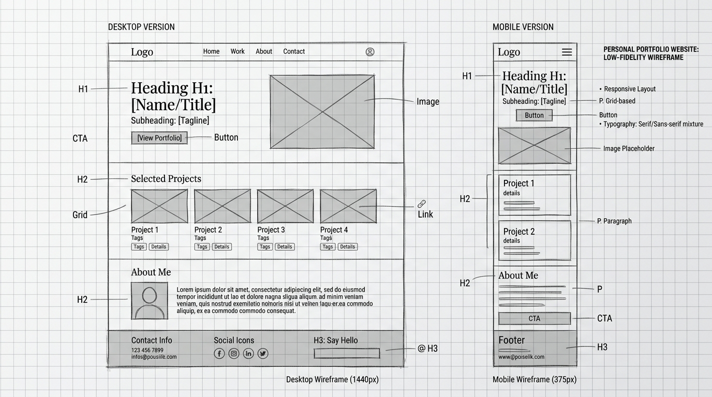
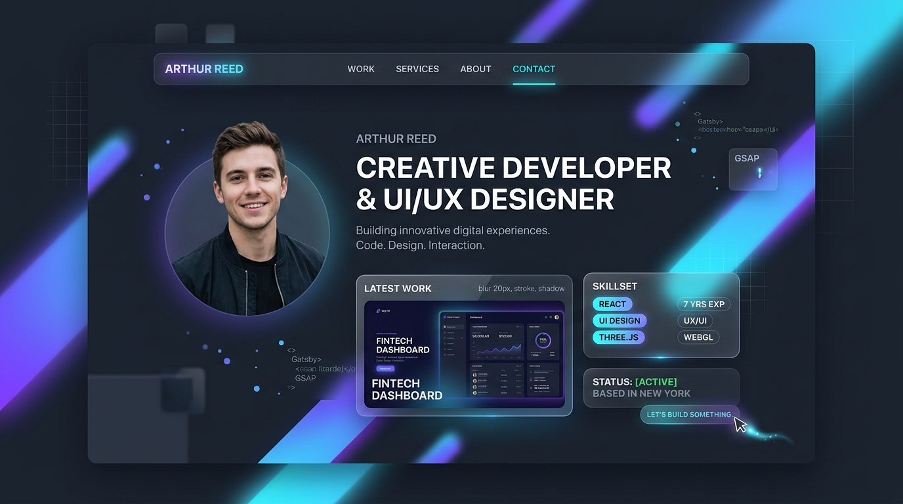
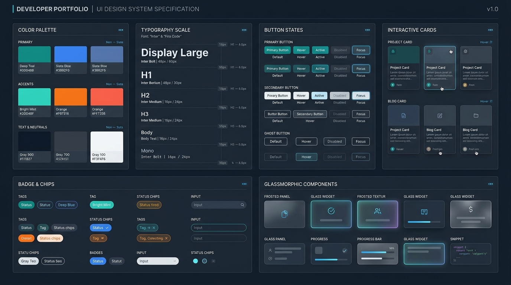

Wireframes & Design System Specification
Comprehensive documentation prepared for academic checking and design evaluation. Includes Low-Fidelity blueprints, High-Fidelity UI mockups, atomic design tokens, accessibility metrics, and responsive viewport simulations.
✅ Evaluator Checking Rubric & Compliance Matrix
Designed for quick verification by the instructor or project reviewer.
Wireframe & Mockup Comparisons
Side-by-side progression from conceptual structural blueprints to the production-ready interface.

Lo-Fi Design Rationale & Blueprint Key:
- Desktop Viewport (1440px): 12-column grid layout with sticky top navigation, two-column split hero (H1 headline + CTA vs. profile media card), 3-column project showcase grid, and bento-box about layout.
- Mobile Viewport (375px): Single-column progressive layout with collapsible hamburger drawer, full-width CTA buttons (minimum 48px touch targets), and vertically stacked timeline cards.
- Layout Tags: Labeled semantic areas for easy structure validation.

Hi-Fi Aesthetic & Visual Language:
- Color Atmosphere: Deep cyber-slate backdrop (
#0a0d14) with multi-layered radial ambient glows in indigo (#6366f1) and electric cyan (#06b6d4). - Glassmorphism: Frosted translucent panels with
backdrop-filter: blur(20px)and subtle 1px border strokes with 10% opacity. - Micro-Interactions: Hover lift elevation (
translateY(-6px)), glowing aura border highlights, and subtle Web Audio feedback.

Design System Coverage:
Documented design tokens for colors, typography hierarchy, primary/secondary/ghost button states, interactive project cards, tags, badges, input controls, and glassmorphic card containers.
Color Palette & WCAG Accessibility
Click any color swatch to copy its HEX value. All foreground-to-background combinations meet or exceed WCAG 2.1 AA/AAA contrast requirements.
Typographic Hierarchy & Scale
Harmonious modular type scale using Outfit for expressive headers, Plus Jakarta Sans for body readability, and JetBrains Mono for technical tokens.
| Level | Font Family | Size / Line-Height | Weight | Specimen |
|---|---|---|---|---|
| Display Large | Outfit | 3.75rem (60px) / 1.1 | 800 Extrabold | Engineering Systems |
| Heading 1 (H1) | Outfit | 2.25rem (36px) / 1.2 | 800 Extrabold | Selected Projects |
| Heading 2 (H2) | Outfit | 1.5rem (24px) / 1.3 | 700 Bold | Lantad Crayfish Architecture |
| Body Base | Plus Jakarta Sans | 1.0rem (16px) / 1.6 | 400 Regular | Building robust full-stack applications with clean architectural patterns. |
| Mono Code | JetBrains Mono | 0.875rem (14px) / 1.5 | 500 Medium | const user = await db.query(); |
Component States Matrix
Standardized UI elements demonstrated across interactive states (Default, Hover, Active, Disabled).